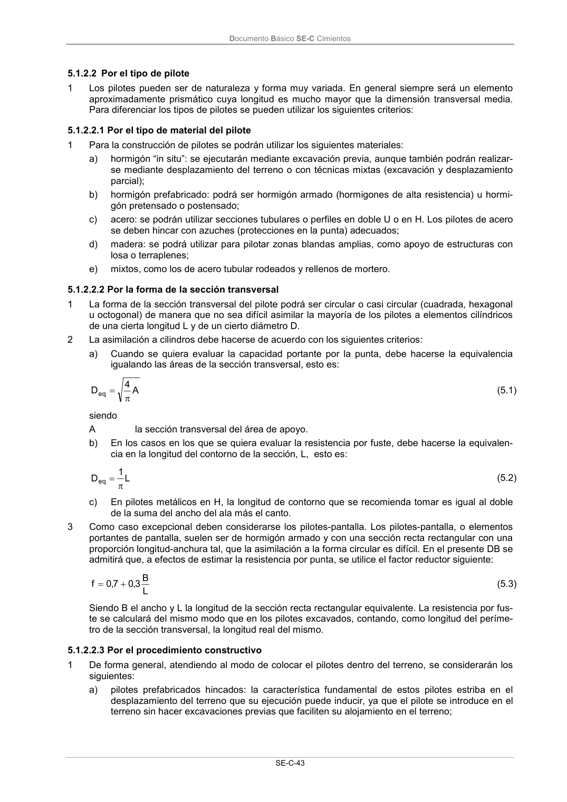

DB-SE-C · 5.1.2.2 Por el tipo de pilote · versión 2019-12-20 · capa oficial
Formatos: JSON compacto · Markdown · PDF fuente
Ámbito del documento · texto del ámbito · documento y tablas
ID técnico a0105 · PDF pág. 48 · jerarquía no validada por persona · contrastado con el literal de la página 48 (candidato tipográfico); no validado por persona · padre: raíz
5.1.2.2 Por el tipo de pilote 1 Los pilotes pueden ser de naturaleza y forma muy variada. En general siempre será un elemento aproximadamente prismático cuya longitud es mucho mayor que la dimensión transversal media. Para diferenciar los tipos de pilotes se pueden utilizar los siguientes criterios:

PDF fuente redistribuible: copia fiel enlazada en esta página (SHA256 verificado).